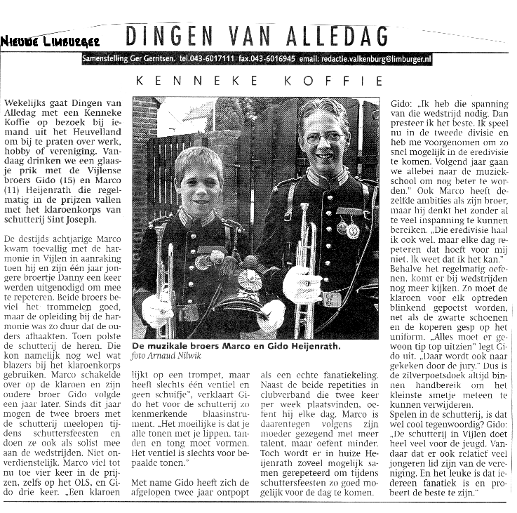
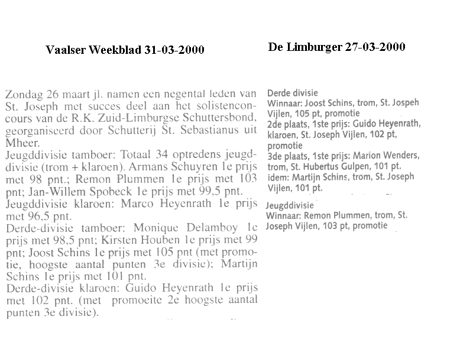
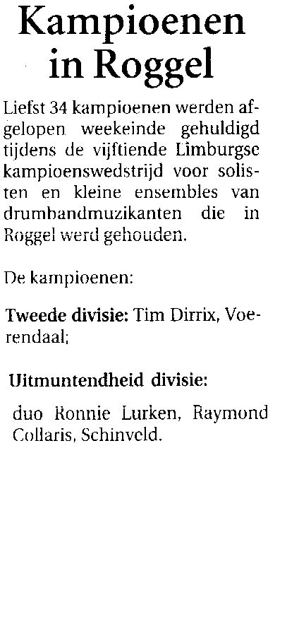
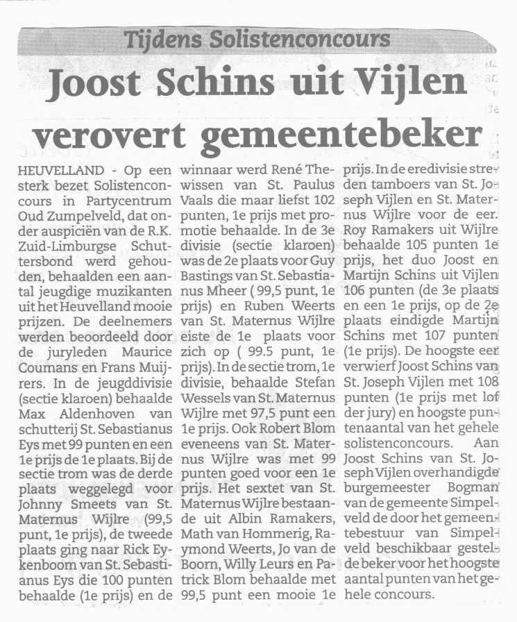

My students
Student achievements
Three decades of contest results: Limburg and Dutch national champions, prize-winners at Jugend Musiziert, and soloists and ensembles honoured in the Netherlands, Germany, Belgium and France.
Contest systems
How contests are graded
Six levels
- Youth level (up to 12 years)
- Third level
- Second level
- First level
- Excellent level
- Level of Honour
Age groups
- Age group 1a — up to 8 years
- Age group 1b — 8 to 10
- Age group 2 — 11 to 12
- Age group 3 — 13 to 14
- Age group 4 — 15 to 16
- Age group 5 — 17 to 18
- Age group 6 — 19 to 20
- Age group 7 — 20 to 28
Two age groups
- Age group 1 — up to 14 years
- Age group 2 — 14 to 19
Results
Year by year
Points are out of the maximum used at each contest. “In cooperation with” indicates students who also received lessons from another teacher.
- 2026
Jugend Musiziert — Regionalwettbewerb, Aachen, 31 January · Drumset (pop)
- Felix (age group 5) — 24/25 points: 1st prize and prize-winner, advanced to state level
- Jonas (age group 2) — 23/25 points: 1st prize and prize-winner
- Fynn (age group 3) — 23/25 points: 1st prize and prize-winner, advanced to state level
- Alex (age group 2) — 20/25 points: 2nd prize
Jugend Musiziert — Preisträgerkonzert, Aachen, 27 February
Invitation for Felix Labedzki: drumset improvisation.
Jugend Musiziert — Landeswettbewerb, Dortmund, 21 March PDF
- Felix — 23/25 points
- Jonas — 23/25 points
- Fynn — 21/25 points
Competition programmes 2026
Student Age group Programme Time category Duration Eschweiler Jonas Lamm 2 Dance the Drums 1 (M. Mordant); Rocksolo 4 (H. Mennens); Welcome to the… (Guns N’ Roses) 6–10 min 10:20 Fynn Krahl 3 Fynn’s Favourite (M. Mordant); Funksolo 3 (H. Mennens); Numb (Linkin Park) 10–15 min 10:41 Felix Labedzki 5 Crazy Army (E. Lemley / S. Gadd); Dance the Drums 2 (M. Mordant); Feeling Good (Michael Bublé); Improvisation (F. Labedzki) 15–20 min 18:15 Gangelt Alexander Foti 2 Rocksolo 3 (H. Mennens); Dancing the Drums 3 (M. Mordant); Starlight (Muse) 6–10 min - 2025
Jugend Musiziert — Regionalwettbewerb, Jülich, 1 February · Mallets
- Jonas (age group 1b) — 24/25 points: 1st prize and prize-winner
- Fynn (age group 2) — 24/25 points: 1st prize and prize-winner, advanced to state level
- Alex (age group 1b) — 24/25 points: 1st prize and prize-winner
- Felix (age group 4) — 24/25 points: 1st prize and prize-winner, advanced to state level
- Burkhard (age group 4) — 22/25 points: 1st prize
- Tobias (age group 4) — 22/25 points: 1st prize
Jugend Musiziert — Preisträgerkonzert, Aachen, 21 February
- Jonas — marimba: Miniature for Marimba (Michel Mordant)
- Felix — drumset: New Era (Felix Labedzki)
Jugend Musiziert — Landeswettbewerb, Essen, 24 March PDF
- Fynn — 21/25 points
- Felix — 21/25 points
Competition programmes 2025
Student Age group Programme Time category Duration (min) Eschweiler Jonas Lamm 1b Marimba: Eli Green’s Cakewalk (S. Koninsky); glockenspiel: Menuet (J. S. Bach); marimba: Miniature for Marimba (M. Mordant); marimba: Pirates of the Caribbean (H. Zimmer) 6–10 min 7 19/30 Fynn Krahl 2 Snare drum: Ranec (J. Zinzen); drumset: Rocksolo 4 (H. Mennens); set-up: Set-Up Solo 1 (M. Mordant); snare drum: Try It (F. Rademakers) 6–10 min 7 1/6 Burkhard Vogt 4 Marimba: Solo 3 (R. Wiener); vibraphone: Für Elise (L. van Beethoven); marimba: Triad Dimension (M. Mordant); marimba: Alla Turca (W. A. Mozart) 15–20 min 12 3/4 Felix Labedzki 4 Drumset: Signature (S. Fink); set-up: Jeroen (F. Rademakers); snare drum: Back in Town (M. Mordant); drumset: New Era — improvisation 15–20 min 15 11/12 Tobias Frank 4 Marimba: Marimba Piece 1 (R. Wiener); marimba: Yellow After the Rain (M. Peters); vibraphone: Diphtongue (M. Mordant); marimba: Furioso and Waltz (E. Hatch) 15–20 min 16 2/5 Gangelt Alexander Foti 1b Xylophone: Ententanz (N. J. Živković); glockenspiel: Double Up (M. Mordant); xylophone: Minuet (Petzold); xylophone: Cryptus (Mobers) 6–10 min - 2015
- Eschweiler “Best Of” concert — programme (PDF)
- Dutch national championships, 2nd division, xylophone section: Jeroen van der Poel
- 2014
- Jugend Musiziert — Regionalwettbewerb, Aachen, 25 January: David (age group 2) — 24/25 points, 1st prize and prize-winner
- Jugend Musiziert — Landeswettbewerb, Essen, 14 March: David (age group 2) — 21/25 points PDF
- Mausbach: workshop “Trommelzeichen zu heutigen Noten” PDF
- Maasniel: workshops 1 and 2 PDF
- 2013
Sabbatical.
- 2012
- 2011
- World Music Contest (WMC), soloist competition: Daan Westra and Jonas Germans PDF
- 2010
Limburgse Bond van Tamboerkorpsen — Limburg championships, Roggel, 14 March PDF
- 1st division, percussion duo: Martijn and Joost Schins (St. Joseph Vijlen) — Sticking 2-gether (M. Mordant), 90 points Champion of Limburg
- 1st division, marimba soloist: Stephan Geelen (Eendracht Dieteren) — Spanish Dance (K. Stensgaard), 89 points Champion of Limburg
- 2nd division, xylophone/marimba duo: Bianca and Joyce Berkers — Tango per due (I. Weijmans) Champion of Limburg
Limburgse Bond van Tamboerkorpsen — Merkelbeek, 31 January PDF
- 1st division, percussion duo: Martijn and Joost Schins (St. Joseph Vijlen) — Sticking 2-gether (M. Mordant), 93 points Winner 1st division & contest winner
- Youth level: Celine Dodemont, B♭ bugle (section B), in cooperation with Marco Gulpen Winner youth division
- Youth level: Jonas Germans, snare drum, in cooperation with Schins Winner youth division
Limburgse Bond van Tamboerkorpsen — Koningsbosch, 10 January
- 1st division, xylophone/marimba soloist: Stephan Geelen (Drumband Fanfare Eendracht Dieteren) — Spanish Dance (Kai Stensgaard), 87 points Winner 1st division
- 1st division, snare drum soloist: Stephan Geelen (Drumband Fanfare Eendracht Dieteren) — Back in Town (Michel Mordant), 87 points Winner 1st division
- 2nd division, xylophone/marimba duo: Bianca and Joyce Berkers — Tango per due (I. Weijmans) Winner mallet duo
- 4th division, drumset: Niels Eberson — Drumsolo no. 1 (E. Lammers) Winner drumset solo
- 2009
Dutch national championships, Elburg, 3 October
- 2nd division, xylophone/marimba soloist: Joyce Berkers (Drumband Schutterij St. Stephanus Dieteren) Champion of the Netherlands
- 2nd division, xylophone/marimba soloist: Bianca Berkers (Drumband Schutterij St. Stephanus Dieteren) — 2nd best
- 2008
- Limburg championships, Merkelbeek (16 March): Stephan Geelen (St. Stephanus Dieteren) — marimba solo Furioso and Valse, 2nd level, 88 points Champion of Limburg
- Limburg championships, Merkelbeek (16 March): Joost Schins (St. Joseph Vijlen) — 1st division snare drum, 93 points, 2nd best video
- Maasbracht, 12 January: Stephan Geelen (Drumband Schutterij St. Stephanus Dieteren) — 2nd division xylophone/marimba soloist, 87 points
- Heerlen, 21 January: Judith Keulers (Drumband Harmonie St. David Voerendaal) — 2nd division xylophone/marimba soloist, 85 points video
- Youth division snare drum: Niels Eberson and Jeroen van Buggenum (Drumband Fanfare Eendracht Dieteren) — 81 points
- 2007
Dutch national championships, Elburg, 13 October
- Lars Bogie — snare drum, 4th level (in cooperation with Henry Geelen) Champion of the Netherlands
- Bianca and Joyce Berkers — snare drum, youth level (in cooperation with Henry Geelen) Champion of the Netherlands
- Stephan Geelen and Jeroen Janssen — snare drum duo, 3rd level (in cooperation with Henry Geelen) Champion of the Netherlands
- Joost Schins — snare drum, 2nd level; contest piece Sagitta (M. Mols) Champion of the Netherlands
O.L.S. Nederweert — soloist competition, honour division percussion
- 1. J. Schins (Sint Joseph Vijlen) — 90.00 points
- 2. M. Schins (Sint Joseph Vijlen) — 85.00 points
Limburg championships, Melick, 17–18 March
- Martijn and Joost Schins (Vijlen) — snare drum duo Dialogo (H. Schellekens), 1st level, 87 points Champion of Limburg
- Joost Schins (Vijlen) — snare drum solo Sagitta (M. Mols), 2nd level, 90.5 points Champion of Limburg
- Lars Bogie (St. Stephanus Dieteren) — snare drum solo Expo (J. Stoffels), 4th level, 87 points Champion of Limburg
- Kevin Louvenberg (St. Stephanus Dieteren) — snare drum solo First Concert (F. Rademakers), 5th level, 87.5 points Champion of Limburg
- Bianca and Joyce Berkers (St. Stephanus Dieteren) — snare drum duo Marche and Dance (G. Bomhof), 5th level, 90 points Champion of Limburg
- Youth division snare drum duo: Joyce and Bianca Berkers (Drumband Schutterij St. Stephanus Dieteren) — 86 points
- 5th division snare drum soloist: Kevin Louvenberg (St. Stephanus Dieteren) — 87.5 points, Limburg champion 2007
- 5th division snare drum soloist: Melvin Schulpen (Drumband Schutterij St. Stephanus Dieteren) — 87 points
- 5th division xylophone/marimba soloist: Eefje Claessen (Drumband Fanfare Eendracht Dieteren) — 87 points
- 4th division snare drum soloist: Joyce Berkers (Drumband Schutterij St. Stephanus Dieteren) — 86 points
- 3rd division snare drum duo: Stephan Geelen and Jeroen Janssen (Drumband Schutterij St. Stephanus Dieteren) — 90 points
For the best results, students should also receive extra lessons from a senior percussionist; for St. Stephanus Dieteren this is Henry Geelen.
Heerlen
- 4th division xylophone/marimba soloist: Judith Keulers (Drumband Harmonie St. David Voerendaal) — 83 points
- 3rd division multi-percussion soloist: Jasper Vliex (Drumband Harmonie St. David Voerendaal) — 85 points
- 2nd division snare drum soloist: Joost Schins (Schutterij St. Joseph Vijlen) — 88 points
- 1st division snare drum duo: Martijn and Joost Schins (Schutterij St. Joseph Vijlen) — 87 points
- 2006
- Dutch national championships, Berlicum, 2 June: Kevin Louvenberg — snare drum, youth level; contest piece Basic Game (L. Camp) Champion of the Netherlands
- O.L.S. Stramproy, 3 July: Joost Schins — 26 Rudimental Solo (H. van Boven), level of Honour, 90.5 points
- Limburg championships, Kerkrade, 19 March: Judith Keulers — marimba, Polka en Galopp (I. Weijmans), 5th level, 91 points Champion of Limburg
- Limburg championships, Kerkrade, 19 March: Stephan Geelen — marimba, Polka en Galopp (I. Weijmans), 4th level, 88 points Champion of Limburg
- Limburg championships, Kerkrade, 19 March: Martijn Schins — snare drum, Sagitta (M. Mols), 2nd level, 89 points — 2nd best of Limburg
- Limburgse Bond van Tamboerkorpsen, Heerlen, 22 January: Luc Pieters — marimba, Starting Up (M. Mordant), youth level, 83 points
- Limburgse Bond van Tamboerkorpsen, Heerlen, 22 January: Judith Keulers — marimba, Polka en Galopp (I. Weijmans), 5th level, 87 points DOC
- 2005
- Houthem, 21 August: Joost Schins — Golden Tricks (J. Schipper), level of Honour, 86.90 points, 2nd best
- Houthem, 21 August: Martijn Schins — Expression (C. Bertjens), level of Honour, 87.10 points
- Federatiefeest Born, 17 June: Joost Schins — Golden Tricks (J. Schipper), level of Honour, 53.5 points
- Federatiefeest Born, 17 June: Martijn Schins — Expression (C. Bertjens), level of Honour, 53 points
- Zuidlimburgse Schuttersbond, Nieuwenhagen, 28 March: Joost and Martijn Schins — Timing (Henk Smit), level of Honour, 176 points Contest winner
- Zuidlimburgse Schuttersbond, Nieuwenhagen, 28 March: Joost Schins — Golden Tricks (J. Schipper), level of Honour, 175.5 points Contest winner soloists
- Zuidlimburgse Schuttersbond, Nieuwenhagen, 28 March: Martijn Schins — Expression (C. Bertjens), level of Honour, 172.5 points — 2nd best soloist
- Limburg championships, Grubbenvorst, 20 March: Timo Coutura — marimba, Yellow After the Rain (M. Peters), 2nd division section F/G Champion of Limburg
- Limburgse Bond van Tamboerkorpsen, Noorbeek, 1 February: Roel Zimny — marimba, Furioso and Valse in D minor (E. Hatch) — winner 2nd division section F/G
- Limburgse Bond van Tamboerkorpsen, Noorbeek, 1 February: Timo Coutura — marimba, Yellow After the Rain (M. Peters), 2nd division section F/G — 2nd best
- OSC Baexem: Dion Lamkin — marimba, Starting Up (M. Mordant), 3rd level, 82 points
- 2004
- Zuidlimburgse Schuttersbond, Simpelveld, 28 March: Joost Schins — Blue Ribbon (H. Borrenberghs), level of Honour, 108 points Contest winner
- Zuidlimburgse Schuttersbond, Simpelveld, 28 March: Joost and Martijn Schins — Dialogo (H. Schellekens), level of Honour, 106 points Contest winner ensembles
- Zuidlimburgse Schuttersbond, Simpelveld, 30 March: Martijn Schins — 26 Rudimental Solo (H. van Boven), level of Honour, 105 points — 3rd best of the contest
- Limburg championships, Heel, 14 March: Jasper Vliex — xylophone, Yankee Land (M. Hoffman), 2nd level section F/G Champion of Limburg
- Limburgse Bond van Tamboerkorpsen, Heerlen, 1 February: Tim Dirrix — marimba, Rosewood Blues (C. Delancy), level of Honour section F/G
- Limburgse Bond van Tamboerkorpsen, Heerlen, 1 February: Judith Keulers — Wals in C (L. Claasen), youth level section F/G
- 2003
- O.L.S. Kessenich (Belgium), 6 July: Martijn Schins — Golden Tricks (J. Schipper), level of Honour, 52.5 points
- Zuidlimburgse Schuttersbond, Voerendaal, 30 March: Martijn Schins — Golden Tricks (J. Schipper), level of Honour, 110 points Contest winner
- Zuidlimburgse Schuttersbond, Voerendaal, 30 March: Joost Schins — Back in Town (M. Mordant), level of Honour, 108.5 points — 3rd best of the contest
- Soloist contest (Z.L.S.F.), Voerendaal, 30 March: Martijn and Joost Schins and Tim Kusters — Striking Back (M. Mordant), first level, 109 points — 2nd best of the contest
- Limburg championships, Borgharen, 13 March: Jasper Vliex — xylophone, Polka en Galop (I. Weijmans), 3rd level section F/G Champion of Limburg
- 2002
- Zuidlimburgse Schuttersbond, Eys, 9 June: Martijn Schins — snare drum, Compilation March (G. Bomhof) and Expression (C. Bertjens), level of Honour
- Zuidlimburgse Schuttersbond, Eys, 9 June: Remon Plummen — snare drum, Three Dances (L. Camp), second level
- Dutch national championships, Berlicum, 2 June: Armand van Loo — xylophone, 3rd level section F/G; contest piece Mars en Wals (I. Weijmans) Champion of the Netherlands
- Soloist contest (Z.L.S.F.), Ubachsberg, 4 April: Petra, Martijn and Joost Schins and Tim Kusters — Back to the Roots (M. Mordant), first level, 104 of 120 points
- Limburg championships, Melick, 13 March: Armand van Loo — xylophone, 3rd level section F/G; contest piece Wals in C (L. Claesen) Champion of Limburg
- L.B.T., Heerlen, 3 February: Armand van Loo — xylophone, Wals in C (L. Claesen), 3rd level section F/G
- L.B.T., Roggel, 19 January: Ralf Linssen — snare drum, My First Audition (M. Mordant), youth level section A, 52 points
- 2001
- Maria Habes soloist contest (O.S.C.), Heel, 4 November: Tymen Abels — marimba, Solo Piece for Anaïs (Ruud Wiener), third level
- Maria Habes soloist contest (O.S.C.), Heel, 4 November: Ayrton Spierts — snare drum, Repetition March (Henk Mennens), youth level
- Mons. Roncken Toernooi, Amstenrade, 23 September: Tijmen Abels — xylophone, 3rd level
- Zuidlimburgse Schuttersbond, Wijlre, 19 August: Joost Schins (snare drum, first level), Tim Kusters (snare drum, level of Honour), Gido Heijenrath (B♭ bugle, third level), Monique Delamboy (snare drum, second level)
- Zuidlimburgse Schuttersbond, St. Geertruid, 17 June: Martijn Schins (snare drum, first level), Tim Kusters (snare drum, level of Honour), Gido Heijenrath (B♭ bugle, third level), Remon Plummen (snare drum, third level), Joost Schins (snare drum, first level)
- Kantonale Bond van Schutterijen “Eendracht Maakt Macht”, Buggenum: Ralf Naus — snare drum, youth level
- Kantonale Bond van Schutterijen “Eendracht Maakt Macht”, Roggel, 17 June: Ralf Linssen — snare drum, youth level
- O.S.C., St. Odiliënberg, 10 June: duo Juul Beckers and Timmy Coenen — percussion, youth level, Exposition for percussion duo (M. Mordant)
- Mons. Roncken Toernooi, Melick, 20 May: Tijmen Abels — xylophone, 3rd level
- Dutch national championships, Berlicum, 13 May: Tim Dirrix — marimba, excellent level section F/G; contest piece Yellow After the Rain (M. Peters) Champion of the Netherlands
- Dutch national championships, Berlicum, 13 May: Roel Zimny — xylophone, third level section F/G; contest piece Yankee Land (M. Hoffman) Champion of the Netherlands
- Zuidlimburgse Schuttersbond, Mechelen, 8 April: Ron Lurken — snare drum, level of Honour; contest piece Back in Town (M. Mordant) Contest winner
- Zuidlimburgse Schuttersbond, Mechelen, 8 April: Joost Schins (snare drum, first level), Gido Heyenrath (B♭ bugle, second level), Remon Plummen (snare drum, second level), Armand van Loo (snare drum, third level)
- 10th O.S.C., Baexem, 25 March: Paul Venner — concert toms, third level
- Limburgse Bond van Tamboerkorpsen, Landgraaf, 18 March: Tim Dirrix — marimba, excellent level section F/G Champion of Limburg
- Limburgse Bond van Tamboerkorpsen, Landgraaf, 18 March: Ron Lurken — snare drum, excellent level section C Champion of Limburg
- Limburgse Bond van Tamboerkorpsen, Landgraaf, 18 March: Roel Zimny — xylophone, third level section F/G Champion of Limburg
- Limburgse Bond van Tamboerkorpsen, Heerlen, 11 February: Tim Dirrix (marimba, excellent level F/G), Ron Lurken (snare drum, excellent level C), Roel Zimny (xylophone, third level F/G)
- Jugend Musiziert, Düren (Germany), 28 January: Timo Coutura (age group 4), Daniel Kupper (age group 3), Stefan Hagel and Linda Mertes (age group 2) — marimba, timpani, snare drum and drumset; Stefan played a timpani solo by J. McKenzie
- Gido and Marco Heijenrath
- Concert “Het Land van Ooit”, Drunen: Rafael Sars — snare drum, in the record attempt “The Biggest Symphony Orchestra ‘Ooit’”, conductor Henk Westbroek
- 2000
- Schuttersfeest Gulpen, 6 August: Monique Delamboy (snare drum, third level, promoted to second level), Gido Heijenrath (B♭ bugle, third level), Jan Willem Spobeck (snare drum, youth level)
- Federatiefeest Klimmen, 23 June: Martijn Schins (snare drum, first level), Ronny Lurken (snare drum, level of Honour), Remon Plummen (snare drum, youth level)
- Oud Limburgs Schuttersfeest, Baarlo: Martijn Schins (snare drum, first level), Ronny Lurken (snare drum, level of Honour)
- Zuidlimburgse Schuttersbond, Nieuwenhagen, 18 June: Marco Heijenrath (B♭ bugle, youth level), Gido Heijenrath (B♭ bugle, third level)
- Zuidlimburgse Schuttersbond, Ubachsberg, 21 May: Monique Delamboy (snare drum, third level), Armand van Loo (snare drum, youth level), Marco Heijenrath (B♭ bugle, youth level), Gido Heijenrath (B♭ bugle, third level)
- Ondeling Solisten Concours, St. Odiliënberg, 2 April: Kenneth Savelkoul — xylophone, third level
- Zuidlimburgse Schuttersbond, Mheer, 26 March: Joost Schins (snare drum, third level), Gido Heijenrath (B♭ bugle, third level), Remon Plummen (snare drum, youth level)
- Limburgse Bond van Tamboerkorpsen, Landgraaf, 13 February: Tim Dirrix — xylophone, first level section F/G
- Limburgse Bond van Tamboerkorpsen, Melick, 31 January: Michel Thomassen — snare drum, youth level section C
- 1999
- Ronnie Lurken — snare drum: Zuidlimburgse Schuttersbond Meerssen (22 August, first level), Houthem (8 August, first level), Z.L.S.F. Susteren (18 July, first level), O.L.S. Reuver (4 July, second level), Wijlre (20 June, first level), Schin op Geul (30 May, first level), Valkenburg (28 March, level of Honour)
- O.S.C. Heel, 25 April: Tymen Abels — xylophone, youth level
- O.S.C. Baexem, 28 March: Ruud Joris — xylophone, first level
- Limburgse Bond van Tamboerkorpsen, Roggel, 21 March: Tim Dirrix — xylophone, second level section F/G Champion of Limburg
- Limburgse Bond van Tamboerkorpsen, Roggel, 21 March: Ronnie Lurken and Raymond Collaris — snare drum ensemble, excellent level section C Champion of Limburg
- Limburgse Bond van Tamboerkorpsen, Heerlen, 31 January: Ronnie Lurken and Raymond Collaris (snare drum ensemble, level of Honour section C); Tim Dirrix (xylophone, second level section F/G)
- 1998
- Zuid Limburgs Federatiefeest, Valkenburg, 19 July: Ronnie Lurken — snare drum, first level
- Oud Limburgs Schuttersfeest, Kinrooi (Belgium), 5 July: Ronnie Lurken — snare drum, first level
- S.E.C. Posterholt, 19 April: Rik van Bree — snare drum, youth level
- Zuidlimburgse Schuttersbond, Wijlre, 29 March: Ronnie Lurken — snare drum, first level. This contest has been won four times by former students (1992, 1993, 1995 and 1996).
- Limburgse Bond van Tamboerkorpsen, St. Geertruid, 21 March: Tim Dirrix — xylophone, Polka en Galop (I. Weijmans), third level section F/G Champion of Limburg
- Jugend Musiziert, Düren (Germany), 25 January: Timo Coutura (age group 3) and Lucas Stolberg (age group 2) — xylophone, timpani, snare drum and drumset
- Limburgse Bond van Tamboerkorpsen, Heerlen, 18 January: Tim Dirrix — xylophone, Polka en Galop (I. Weijmans), third level
- 1993to 1997
- Oud Limburgs Schuttersfeest, Kaulille (Belgium), 6 July 1997: Ronnie Lurken — snare drum
- Vriendenkrans, Heel, 13 April 1997: Onno van de Ven — marimba, Cool Bite (W. Stadler), duet with Richard Steinbusch (vibraphone)
- O.S.C. Merkelbeek, 1 April 1996: Geert Gebben — snare drum, youth level
- S.E.C. Posterholt, 24 March 1996: Pierke Boosten — snare drum, youth level
- O.S.C. Doenrade, 2 April 1995: Stevie Gelissen (snare drum, second level) and Joep Larue (snare drum, youth level)
- Limburgse Bond van Tamboerkorpsen, Sittard, 14 March 1993: Linda, Angelique and Carol Gubbels — snare drum, third level section C
- Limburgse Bond van Tamboerkorpsen, Epen: Sanne Teheux — B♭ bugle, youth level section B Champion of Limburg

Archive
Press clippings and documents
Newspaper articles, certificates and contest documents from the students’ archive.
 Press clipping, 20 August 2001
Press clipping, 20 August 2001
 Press clipping, 8 April 2001
Press clipping, 8 April 2001
 Press clipping, 20 March 2001
Press clipping, 20 March 2001
 Jugend Musiziert 2001
Jugend Musiziert 2001
 Stefan Hagel
Stefan Hagel


Marco and Gido Heijenrath Vaalser Weekblad, 11 August 2000
Vaalser Weekblad, 11 August 2000
 Press clipping, 24 July 2000
Press clipping, 24 July 2000
 De Limburger and Vaalser Weekblad, 10 July 2000
De Limburger and Vaalser Weekblad, 10 July 2000
 De Limburger and Vaalser Weekblad, 25 May 2000
De Limburger and Vaalser Weekblad, 25 May 2000


Press clipping, 27 March 2000

Press clipping, 22 March 1999 Press clipping, 29 March 1998
Press clipping, 29 March 1998
 Press clipping, 28 February 1997
Press clipping, 28 February 1997

Joost Schins, 2004